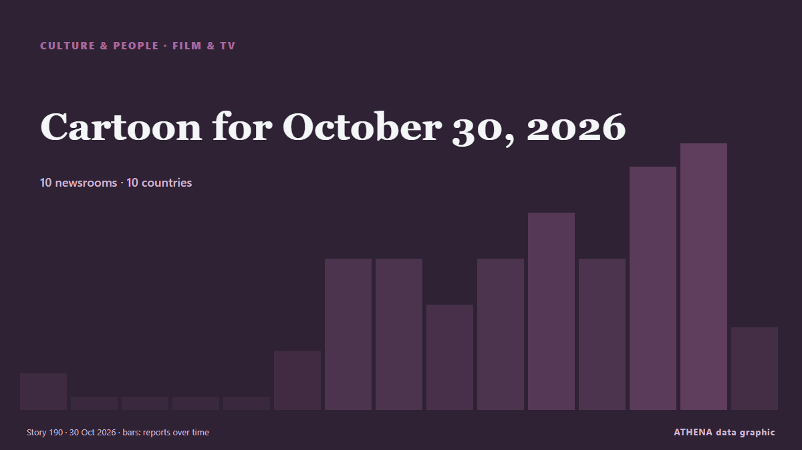

Kultur, Menschen und Lifestyle
GesponsertPräsentiert von  Cybernetics and Artificial Intelligence Lab Welcome to the Cybernetics and Artificial Intelligence Laboratory, established at the Department of Business Administration of the National
Cybernetics and Artificial Intelligence Lab Welcome to the Cybernetics and Artificial Intelligence Laboratory, established at the Department of Business Administration of the National
Schlagzeilen werden auf Englisch angezeigt, wie veröffentlicht.

Film und FernsehenCartoon for October 30, 2026
Gemeldet von 10 Medien in 10 Ländern seit dem 2. Okt. Zuerst gemeldet von Politico.
| 20. Okt. | 0 |
|---|---|
| 21. Okt. | 4 |
| 22. Okt. | 4 |
| 23. Okt. | 11 |
| 24. Okt. | 13 |
| 25. Okt. | 6 |
| 26. Okt. | 52 |
| 27. Okt. | 72 |
| 28. Okt. | 75 |
| 29. Okt. | 79 |
| 30. Okt. | 87 |
| 31. Okt. | 52 |
| 1. Nov. | 39 |
| 2. Nov. | 51 |
‘Hunger Games’ Companion Album to Feature Jennifer Lawrence, Ella Langley, Tyler Childers, Mckenna Grace and 25 More
The lineup for the companion album for “The Hunger Games: Sunrise on the Reaping” has been announced, and it’s packed out, with no fewer than 29 tracks, featuring well-established rock, country and… von Variety
Newsom’s November Surprise: Boost CA Film & TV Tax Incentives To $1B ASAP, Says Exiting Governor
The day before his successor as California’s governor is elected in the high stakes midterms, Gavin Newsom is going out with a bang. von Deadline
Fallon Sherrock speaks out after criticism over £501,000 Luke Littler win
The Netflix show saw Luke Littler take on a number of amateur contestants who were trying win £501,000. von Liverpool Echo
John Leeson Dies: Actor Who Voiced Iconic Role In ‘Doctor Who’ Was 83
John Leeson, the British actor who voiced Doctor Who’s iconic companion K9, has died aged 83, his family has confirmed. von Deadline
Heidi Klum reveals Halloween costume as her annual party marks 25 years
Klum was unrecognisable, with only her eyes and mouth showing. von The Irish News (Belfast)
Christie’s debut Abu Dhabi sale totals $8.94 million, setting nine auction records
Christie’s first fine art auction in Abu Dhabi totalled $8.94 million on Sunday, delivering the auction house’s highest total for an evening sale of modern and contemporary Middle Eastern art in more… von The National
Strictly Come Dancing fans 'absolutely devastated' as spoiler reveals who left
Strictly Come Dancing fans have shared their disappointment after the latest results were leaked online. von WalesOnline
BST Hyde Park 2027: RAYE announced as next headliner
She will be joined by Sienna Spiro for her biggest headline show to date. von NME
Cartoon for November 2, 2026
The news of the day as interpreted by our talented artists, illustrators and cartoonists. von Sydney Morning Herald
Russia and Azerbaijan signed an armored vehicle modernization program
Russia and Azerbaijan have signed a program to build and modernize facilities for repairing armored vehicles used by the Azerbaijani. von The Times of Central Asia
King Charles on Caribbean tour as calls grow for slavery reparations
UK’s King Charles joined a Junkanoo street parade during a visit to the Bahamas ahead of the Commonwealth summit. von Al Jazeera English
Maya Jama responds to feeling for King Kenny after Celebrity Traitors betrayal
Maya Jama has spoken about fellow Traitor King Kenny betraying her in the final roundtable of The Celebrity Traitors. von Manchester Evening News
Former Iran midfielder Alidoosti passes away
Hamid Alidoosti, a former Iranian international footballer, has passed away at the age of 70 on Sunday after battling cancer in recent months. von Tehran Times
Michael Mann, director of Heat and Collateral, accidentally shoots self at gun range
He sustained a "superficial injury" in the incident. von CNA (Channel NewsAsia)
'Godzilla Minus Zero2 gets loud applause at Tokyo film festival
Since the release of Godzilla Minus One in 2023, things have gotten a bit crazy... von Empire
Japanese ex-adult film actress recalls ‘terror’ after alleged drugging in Hong Kong
Former Japanese adult film actress Mao Hamasaki has spoken out about the “terror” and “harm” of drugs after fighting for her life when she consumed a suspected spiked drink while performing as a disc… von South China Morning Post
Being like Jean-Luc Picard
Patrick Stewart had dozens of credits on the screen and the stage, but for many people he will always be Capt. von CBC News (alternative feed)
Anyma Fuses Ancient Greece and AI as ÆDEN Lights Up Athens
Anyma brought his ÆDEN show to Greece for the first time, filling OAKA’s Wall of Nations with melodic techno, towering 3D visuals and statues and columns drawn from ancient Greece. von Greek City Times
Box Office: ‘You Can See Everything’ and ‘Clayface’ Battle for No. 1 With $10.5 Million in Sleepy Halloween Weekend
A24’s Elizabeth Holmes documentary “You Can See Everything” and DC’s comic book adaptation “Clayface” are vying for first place at the domestic box office, with each film on track to collect around… von Variety
King Charles to address Commonwealth with 'unflinching honesty' amid slavery focus
European traders enslaved 12.5 million Africans, including 3.2 million transported by Britain. von Express Tribune
Florida child sex sting operation ensnares 17 theme park workers, including Disney and Universal
Disney told investigators it had fired employees connected to the arrests, according to a report. von The Independent
Sir Ian McKellen leads heartbreaking tributes to Sir Patrick Stewart after death at 86
Tributes pour in for Sir Patrick Stewart after his death following a battle with Alzheimer’s disease. von Evening Standard (London)
James Bond actor Ben Whishaw says franchise ‘needs to be reinvented’
The 46-year-old has starred in three James Bond films alongside Daniel Craig as the character of Q. von Evening Standard (London)
After Louvre Heist and String of Thefts, Europe’s Smaller Museums Are on Guard
Europol said museum thefts were becoming more forceful and increasingly focused on precious metals and gemstones. von The Straits Times
US rapper Macklemore launches 'Free Palestine Tour'
Macklemore launches his Free Palestine Tour in Dublin after Ed Sheeran drops him, drawing sold-out crowds and pro-Palestinian support. von The New Arab
Patrick Stewart, Star Trek and X-Men actor, dies at 86
Sir Patrick Stewart, the acclaimed British actor best known for playing Captain Jean-Luc Picard in Star Trek: The Next Generation and Professor Charles Xavier in the X-Men film franchise, has died at… von Gulf News
Romesh Ranganathan and Sebastian Croft relieved Celebrity Traitors win is out
The actor, 24, and comedian Romesh Ranganathan were crowned the winners of the BBC reality show on Friday. von The Irish News (Belfast)
Macklemore says he was unable to ‘stay silent’ about Israel-Palestine conflict
The US rapper performed at the OVO Arena Wembley on Friday night. von The Irish News (Belfast)
Robert Downey Jr. & Pedro Pascal Serve MCU Role Reversal For Halloween: “Costume Swap!”
With less than two months left on the Avengers: Doomsday clock, Robert Downey Jr. and Pedro Pascal swapped sides for Halloween. von Deadline
The Dachshund Is the Muse in an Exhibition Showcasing the Sausage Dog’s History in Art
BREMEN, Germany (AP) — The humble dachshund is taking center stage in a new exhibition in Germany that explores the history of the sausage dog in art — and visitors are welcome to bring their… von The Canadian Press (via CityNews)
Inde Navarrette Takes Swipe at Shane Gillis During ‘SNL’ Monologue
Following a Trump-centric cold open that featured the return of Tom Hanks’ David S. von Variety
Indian Filmmaker Sanjay Gupta Dies: ‘Kaante’ Director Was 57
Sanjay Gupta, the Indian director best known for the crime drama films Kaante and Shootout at Lokhandwala, died Friday, October 30, after a fall at his home in Mumbai. von Deadline
Test your Halloween movie knowledge with our spooky quiz
It's officially spooky season! But how well do you really know your slashers? von ABC News Australia
Mahama visits Kente Exhibition by Russia-Ghana Parliamentary Forum in Moscow
President John Dramani Mahama on Thursday visited the Kente Exhibition by the Russia-Ghana Parliamentary Forum as part of the official activities surrounding the Third Russia-Africa Summit in Moscow. von MyJoyOnline